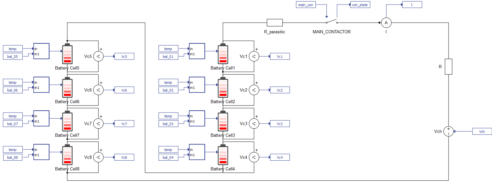
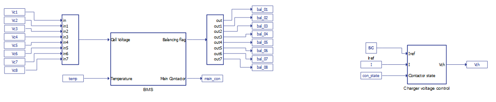
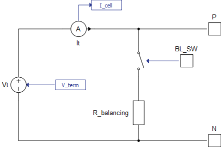
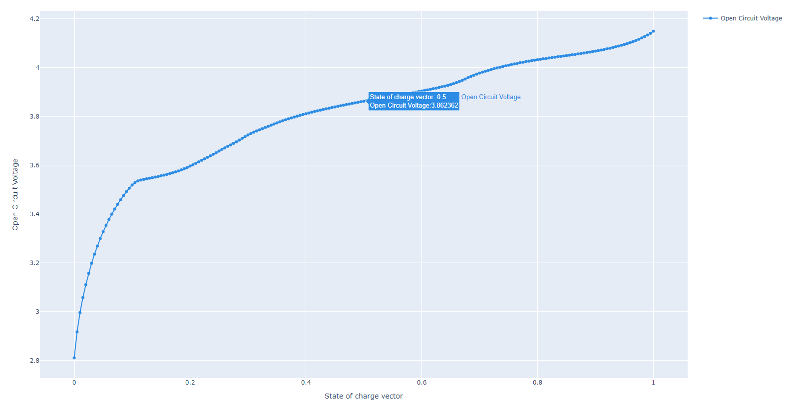
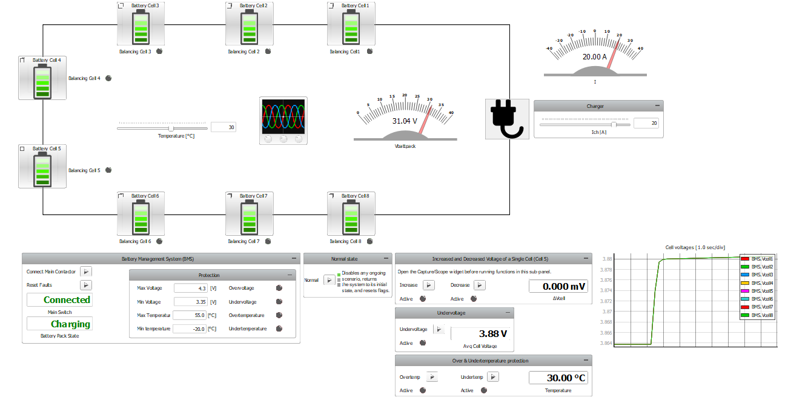
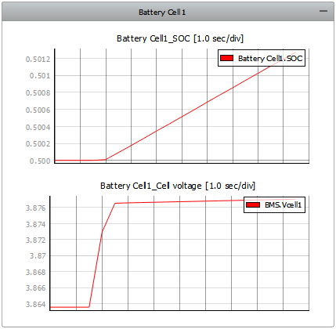
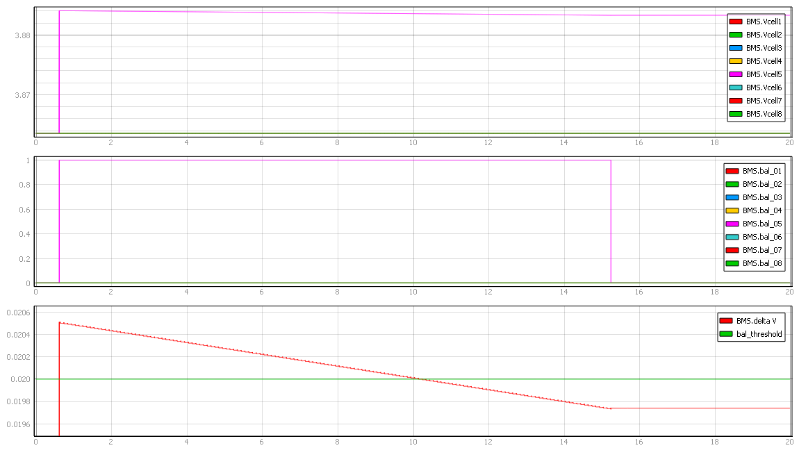
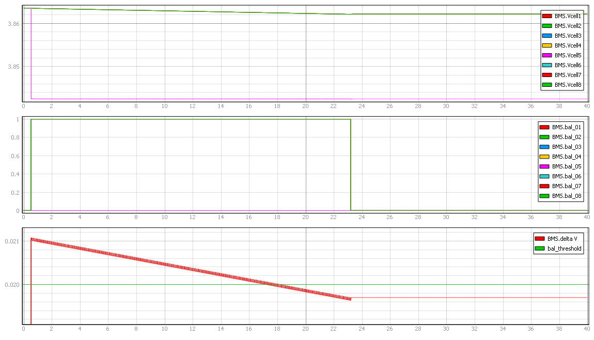

Battery Management System
This application note presents an implementation of a Battery Management System (BMS) in the Typhoon HIL environment. In the model described in this application note, the BMS logic is implemented within the simulation using signal processing components such as the C function component.
Introduction
A Battery Management System (BMS) is a system in charge of oversight and management of a battery or a battery pack. The purpose of the BMS is to protect the battery from operating outside of its safe operating region (i.e., to avoid overvoltage, undervoltage, overtemperature, undertemperature etc.). Another important function of the BMS is balancing batteries to increase the longevity of each cell and to improve the overall capacity of the battery pack. It is important to note that control and monitoring functions are applied to individual battery cells in the battery pack.
A tutorial video featuring this model can be found in the Video Tutorial section.
Model description
The model consists of three main parts: the power stage (comprised of the Battery Pack connected to a charger), the Battery Management System, and the Charger voltage control. The power stage of the model is shown in Figure 1.

The Battery pack contains 8 Battery Cell components connected in series. Each of these components is comprised of 2 cells in parallel, which is a parameter configurable in the component properties. All batteries are lithium-ion and have the same parametrization. In addition, the temperature of all batteries (input of the battery cells) is the same and can be changed in the simulation using a dedicated SCADA input. The initial state of charge (SOC) for each cell is set to 50%. The state of health vector is set to 0, meaning that the effects of battery health are not considered in this model. The nominal value of the battery pack voltage is 33.2 V. The execution rate of the battery cell components is set to 100 µs, which defines the computation cycle time for calculating the cell terminal voltage based on the previous states and the current input. More information on the Battery Cell can be found in its documentation.
The BMS is modeled using the C function component. The main inputs of the BMS subsystem are the terminal voltages measured on each cell and the temperature. In addition, it comes with some predefined SCADA inputs such as the balancing threshold, the intended balancing period, minimum and maximum balancing voltages, overvoltage, undervoltage, overtemperature, and undertemperature thresholds. Commands for resetting flags and connecting the main contactor can also be issued to the BMS through SCADA inputs.
The charger is modeled as a signal-controlled voltage source connected in series with a resistor. It can both charge and discharge the battery pack. The charger voltage is defined in the respective subsystem, based on a closed-loop current control. Both the BMS and the charger control logic are fully implemented using Signal Processing Components. Their subsystems are shown in Figure 2.

BMS operation
The BMS implemented in this model provides measurement, protection, and passive balancing functionalities for all cells. It also controls the main contactor, disconnecting the battery pack from the load if needed.
Based on the measured voltages at each battery cell and the set temperature, the BMS protects the battery pack by opening the main contactor and raising flags which indicate various faulty states, such as overvoltage, undervoltage, overtemperature, and undertemperature. In addition, the BMS oversees the balancing of the battery cells, and regulates the voltage of the entire battery pack.
The BMS performs protection functions by comparing the measured voltage and temperature values of each cell with the defined thresholds. If a measured value is out of its predefined range, the appropriate flag will be raised, and the main contactor which connects the charger and the battery pack will be opened. To close the contactor again, the operation of the battery pack should return to a condition with acceptable voltage and temperature values, and the faults need to be reset. If the voltages and temperatures are within their normal operating ranges, the main contactor can also be manually opened or closed.
The BMS starts/stops the balancing procedure for each battery cell by sending an appropriate signal to the Battery cell input. Passive cell balancing is started/stopped by connecting/disconnecting the balancing resistor through a contactor, embedded in the Battery Cell model. The contactor control signal is provided by the BMS and sent to the input of each Battery Cell component. A Battery Cell model with passive balancing is shown in Figure 3.

The BMS receives the voltage measurement of each cell and calculates the minimum and maximum cell voltage at the defined execution rate. If the voltage of a particular cell is larger than the sum of the minimum cell voltage and the balancing threshold (its default value is 20 mV) or is larger than the defined maximum balancing voltage, the balancing procedure for that cell will be activated and the balancing counter for that cell is started. The balancing counter is defined by the balancing period input of the BMS, and it determines the turn-off delay for the balancing of a cell. If the measured cell voltage is smaller than the defined minimum balancing voltage or the balancing counter has run down to zero, cell balancing for that cell will be stopped. After the time defined by the balancing period has elapsed, the balancing will stop if no other balancing conditions are present.
In this model, the cell voltages are measured only when balancing is not active, similar to how some commercial BMSs function. Additionally, during the balancing process, the balancing resistor is periodically switched on and off.

Simulation
The example model detailed in this application note comes with a pre-built SCADA panel, shown in Figure 5. This panel includes different widgets to monitor and interact with the simulation in runtime. You can customize it freely to fit your needs.

On simulation start, the battery pack is connected to the charger. The state of the main contactor is indicated by the Main Switch display, while the state of the Battery pack is indicated by the Battery Pack State display. The Battery pack has three possible states: Charging (positive charger current), Discharging (negative charger current), and Idle (no power exchanged between the charger and the battery pack). The Protection sub-panel allows you to change different protection thresholds and contains flags which indicate the faulty states.
The charger current and temperature can be changed using the appropriate sliders. The total battery pack voltage measured by the BMS can be observed on the Vbattpack gauge. The cell voltages off all cells can be observed on the Cell voltages trace graph. Each Battery Cell comes with its own sub-panel, which contains graphs for the SOC and Cell Voltage graphs, as shown in Figure 6.

In addition, the balancing of each cell is indicated by its corresponding LED, in the panel root.
The SCADA panel contains several sub-panels used for emulating different protection and balancing functionalities of the BMS.
In the Increased and Decreased Voltage of a Single Cell (Cell 5) sub-panel, one of the two balancing scenarios can be started. Starting each of these scenarios triggers the capture process with an appropriate time interval. Therefore, it is recommended that Capture/Scope is open before running functions in this sub-panel. The Balance capture preset, which is shown when running either of these two scenarios, contains the measured cell voltages on its first window and balancing flags for each cell on its second window. In the third window, delta V (the difference between the cell with the maximum measured voltage and the cell with the minimum measured voltage) is compared to the balancing threshold.
In the first scenario, the voltage of Cell 5 is increased above the balancing threshold. The BMS detects this, and balancing is turned on for that cell. This is shown in Figure 7.

To reproduce results shown in Figure 7, the Increase command should be issued while the battery pack is in the Idle state. By clicking on the Increase button, the Capture procedure is started for a set time interval of 20 seconds.
As can be seen on the first window of Figure 7, the voltage of Cell 5 is increased above the balancing threshold. The BMS detects this condition, and the corresponding balancing flag is raised, as can be seen on the second window. In the third window, which is zoomed in, we can see a sudden increase in delta V. Once the balancing process has started, we can observe a decrease in the voltage of Cell 5, as well as a decrease of delta V. Eventually, delta V falls below the set threshold. We can see that the turn-off delay of the balancing process (the turn-off condition is satisfied once delta V is below the balancing threshold) is 5 seconds, as was defined in the simulation.
In the second scenario, the voltage of Cell 5 is decreased below the balancing threshold. The BMS detects this condition, and balancing is turned on for all other cells in the pack. This is shown in Figure 8.

To reproduce results shown in Figure 8, the Decrease command should be issued while the battery pack is in the Idle state. By clicking on the Decrease button, the Capture procedure is started for a set time interval of 40 seconds.
As can be seen on the first window Figure 8, the voltage of Cell 5 is decreased below the balancing threshold. The BMS detects this condition, and the corresponding balancing flags are raised for all cells except cell 5, as can be seen on the second window. In the third window, which is zoomed in, we can see a sudden increase in delta V. Once the balancing process has started, we can observe a decrease in the voltages of all cells except cell 5, as well as a decrease of delta V. Eventually, delta V falls below the set threshold. Once again, we can see that the turn-off delay of the balancing process (the turn-off condition is satisfied once delta V is below the balancing threshold) is 5 seconds, as was defined in the model.
Delta V is also displayed on the ΔVcell display widget.
By clicking on the Undervoltage button in the Undervoltage sub-panel, you can introduce a state of undervoltage. The BMS reacts to this by raising the appropriate flag and opening the main contactor. You can also introduce a state of either overtemperature or undertemperature using options in the Over & Undertemperature protection sub-panel. The BMS reacts to this by raising the appropriate flag and opening the main contactor.
The Normal button in the Normal state sub-panel disables any ongoing fault scenario. The BMS will apply the necessary actions to return the system to its initial state and all raised flags will be reset. The charger current is set to 0 and the SOC for all batteries is returned to its nominal value of 50%. Finally, the main contactor will be closed.
Test Automation
We don’t have a test automation for this example yet. Let us know if you wish to contribute and we will gladly have you signed on the application note!
Video Tutorial
A demonstration of this example model can be found here (internet connection is required):
Example requirements
Table 1 provides detailed information about the file locations and hardware requirements for running the model in real-time, followed by the HIL device resource utilization when running the model using this minimal hardware configuration. This information is provided to help you with running and customizing the model as you see fit.
| Files | |
|---|---|
| Typhoon HIL files | examples\models\battery management systems\battery management system\ battery management system.tse battery management system.cus |
| Minimum hardware requirements | |
| No. of HIL devices | 1 |
| HIL device model | HIL101 |
| Device configuration | 1 |
| HIL device resource utilization | |
| No. of processing cores | 1 |
| Max. matrix memory utilization | 1.15% (core0) |
| Max. time slot utilization | 47.27% (core0) |
| Simulation step, electrical | 0.5 µs |
| Execution rate, signal processing | 100 µs |
Authors
[1] Nikola Lucic